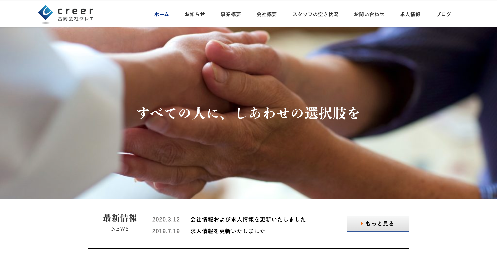

profile

玉置 智士（Tamaki Satoshi）
生年月日：1993.03.06
出身：奈良県
経歴：高卒認定試験 → 京都コンピュータ学院 → 放送大学教養学部（情報コース）
趣味：ドライブ、囲碁、読書
HTML／CSS／JavaScriptを使ったフロントエンド開発に興味があります。
Skills
コンテンツを意識し適切なタグでマークアップすることができます。
デザインカンプを忠実に再現するとともに後々のCSSのメンテナンスを考えコーディングすることができます。
jQueryを使いWEB制作に必要な動きをつけることができます。
個人的にWEB制作の依頼を受けコーポレートサイトを制作したことがあります。他にも自分でオリジナルのテーマを作った経験があります。
c
b
Works

合同会社クレエ
デザイナーさんの作ったデザインカンプを元に自分がHTML・CSSのコーディングとWordPressの「SnowMonkey」というテーマへの組み込みを担当しました。
コンタクトフォームは「Contact Form 7」というプラグインを使い実装しCSSをカスタマイズしました。
難しかった点はお客様の要望で全ページそれぞれにデザインを変え、なおかつレスポンシブにも対応させてたところです。